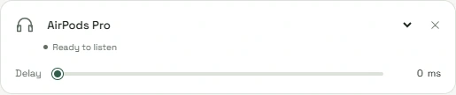
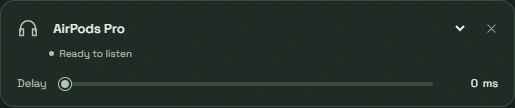
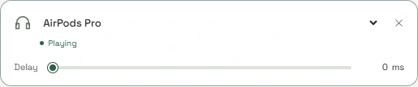
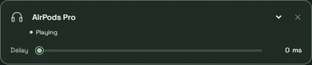
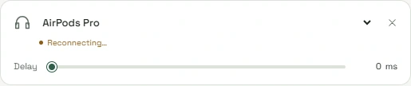
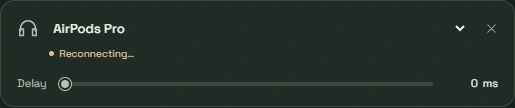
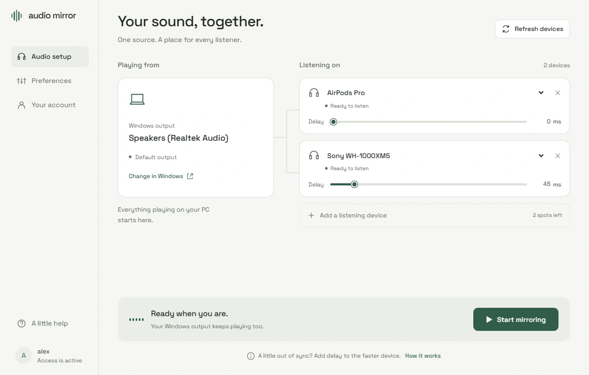
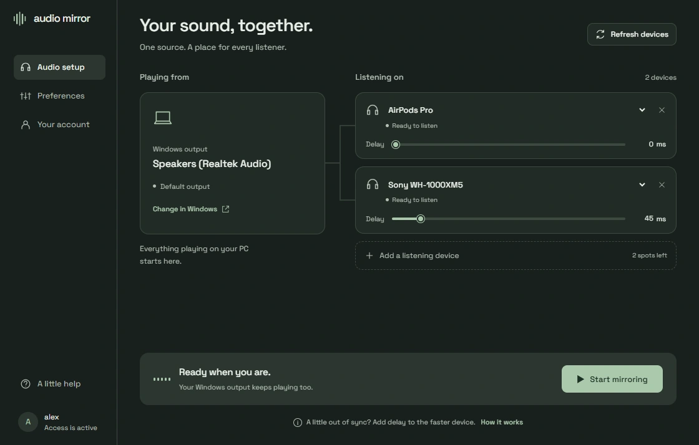

Your sound,
together.
One PC. Your favourite headphones. Share Windows audio across the devices you choose.
Windows 10 / 11 · 64-bit · 32.2 MB
$2.50 for 30 days. Nothing auto-renews.
Audio setup
Interactive previewTry adding delay to the faster device.
Example devices. No audio is captured or played.
For movie nights, shared playlists,
and a little more company.
Every listener, in view.
Ready.
Choose a device Windows can see. Give every listener their own spot.


Playing.
See each stream’s status at a glance. Fine-tune its delay while you listen.


Reconnecting.
A device drops out? Its spot stays selected while the app waits for Windows to make it available.


Example app states. Bluetooth connection capacity depends on your hardware.
A little setup.
A lot of company.
Pair your devices.
Connect your headphones or speakers in Windows Bluetooth & devices settings first.
Start with two devices. Add more as your Bluetooth adapter allows, or mix in wired and USB outputs.
Example setup · pair in Windows first
Easy on the eyes.
Yours to settle into.
A quieter space for your sound. The same thoughtful controls, in light or dark.


A little breathing room.
Using several Bluetooth devices? The app starts with the Stable buffer to give playback more room to keep up. Change it in Preferences whenever you need.
Time well shared.
Add 30 days when you need them.
Nothing automatically renews.
$2.50
USD / 30 days
- Up to four additional listeners
- Individual 0–400 ms delay controls
- Light and dark appearance
- Bluetooth, wired, and USB outputs
Download the app, create an account, then add access with PayPal inside the app.
The download is free. Mirroring requires active access.
A few good
questions.
A little clarity before
you press play.
How many headphones can I use?
Audio Mirror supports up to four additional listening devices while your default Windows output keeps playing.
The number of simultaneous Bluetooth links depends on your adapter, drivers, and headphones. Start with two devices and add more if your hardware supports them.
Can I mix Bluetooth and wired devices?
Yes. Choose the Bluetooth, wired, or USB outputs that appear in Windows. You can mix them in the same setup. Your default Windows output is the source and keeps playing directly.
Will everything be perfectly in sync?
Each device has its own latency. Add 0–400 ms of delay to a faster mirror target to help it match a slower one.
Software cannot remove Bluetooth latency, and precise synchronization is not guaranteed. The controls adjust added delay; they cannot make a slow device play sooner.
What if a device disconnects?
The app shows a reconnecting state and keeps that device selected. It can retry once Windows exposes the audio output again. A change in available devices can briefly restart the audio streams.
If the headphones disconnect in Windows itself, reconnect them there first. Software cannot restore a Bluetooth radio link that Windows has lost.
Which version of Windows do I need?
Windows 10 or Windows 11, 64-bit. Audio Mirror uses Windows audio capture and WebView2 for its interface. Mac, Linux, phones, and tablets are not supported.
How does the payment work?
The download is free. Mirroring requires an account and active access. A USD 2.50 payment through PayPal inside the app adds 30 days. Nothing automatically renews.
Does my audio leave my computer?
Audio routing happens locally on your PC. Internet access is used for account sign-in, access checks, and payments.
Good sound.
Better company.
Make room for another listener.